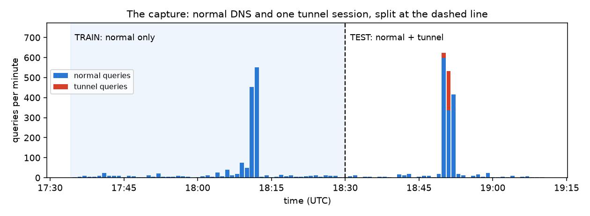

One-page overview of the data, features, model and results.
DNS tunnel detection with an Isolation Forest
One read: what we built, how it works and what it found. Every number comes from notebooks/04_results.ipynb (mean of 10 seeds). JM2030 Cybersecurity, Group 3, case 1.
ROC AUC / PR AUC0.996 / 0.993
Tunnel queries caught98.7%
Features4
False incidents (real: 1)about 4
DNS tunnelling is found because it cannot avoid creating many new names under one domain. The Isolation Forest ranks it almost perfectly from a few such features. How many false alerts result depends on the alert line and on how representative the normal training traffic is.
The idea
A DNS tunnel hides data in query names. Resolvers cache repeated names, so a tunnel must keep asking one domain for many new names. That is hard to avoid, and it is what we measure. The model learns what normal DNS looks like and flags what does not fit.
1. DataZeek dns.log, 3,645 queries over 95 minutes, labelled
→
2. Features4 numbers per query, using only the past
→
3. ModelIsolation Forest, trained on normal traffic only
→
4. AlertsA score above the alert line is an alert; alerts are grouped into incidents
Data and setup

Normal DNS is quiet with two busy periods (one in training, one in test). The tunnel session (red, 222 queries) sits inside the second busy period, which makes it harder to spot.
One tunnel sessionThe capture holds the tunnel session twice (an exact replay). We keep one copy, the one inside the busier period.
Train before 18:30, test afterTraining: 1,592 normal queries, no tunnel. Test: 1,609 normal queries and the 222-query tunnel. Split by time, as in live use.
Alert line from training onlyTraining is cut into five time-ordered pieces. Each is held back once; its highest normal score is a line. The median of the five is the alert line. No test rows are used to choose anything.
The four features
Counted per client and parent domain, using only queries up to the current one, so the same code could run on a live stream.
| Feature | What it measures | Why | Normal / tunnel (median) |
|---|
uniq_names_60s | Distinct names this client asked this domain in the last 60 s | Caching forces a new name per query | 1 / 111.5 |
uniq_ratio_60s | The same count divided by the queries in that window | Normal clients repeat names, a tunnel does not | 0.40 / 1.0 |
norepeat_tol | Long memory: log(1+d) × d/n over all queries so far | Catches slow tunnels; one repeated name barely changes it | 0.40 / 4.72 |
name_bytes | Length of the full name in bytes | Data travels in the name (data and probe queries) | 20 / 19 |
Left out on purpose: IPs, ports, flags, TTL, record type and the like (they separate the classes only because of this lab), and extra name-shape features such as entropy (they correlate 0.8 with name_bytes; Isolation Forest picks features at random, so redundant ones crowd out the useful ones). Details: docs/data_dictionary.md.
How Isolation Forest sees the data
It finds no groups. It asks how many random cuts it takes to separate one query from all the others: normal queries sit in a dense cloud and need many, a tunnel query is alone and needs few. The score is high when few cuts are needed.

Left: normal queries form a dense cloud, the tunnel runs far away from it. Right: a normal query needs about 11 cuts to isolate, a tunnel query about 4.
The main result
| Measure | Mean over 10 seeds | What it says |
|---|
| ROC AUC / PR AUC | 0.996 / 0.993 | The tunnel is ranked almost perfectly, whatever the alert line |
| Recall | 0.987 | Only the first 2 to 3 queries of the session are missed |
| Precision | 0.744 (0.69 to 0.77) | Most alerts are real, but not all |
| False alert queries | 76 (64 to 97) | Mostly one busy Yahoo burst at 18:50 |
| Incidents | 1 real, about 4 false | The tunnel is one incident of 219 alerts |
Queries and incidents. The first four rows count single queries: of 222 tunnel queries, 219 raise an alert (recall 0.987). An analyst does not read 219 alerts, they investigate one event. We therefore also group alerts: alerts from the same client and domain less than 60 seconds apart form one incident. The tunnel then becomes one incident, found 7 milliseconds after the session starts, and the 76 false alert queries become about 4 false incidents.
Against a simple rule, and when the tunnel is slow
A rule alerts when the number of unique names exceeds anything seen in normal training. It has nothing to learn.
| PR AUC | Recall | F1 | Slow tunnel (60×): PR AUC / recall |
|---|
| Isolation Forest | 0.993 | 0.987 | 0.848 | 0.989 / 0.98 |
| Rule: unique names | 0.958 | 0.928 | 0.858 | 0.861 / 0.79 |
| Rule: name length or randomness | 0.324 | 0.180 | 0.301 | |
On this loud tunnel the unique-names rule is about as good. The forest wins when the tunnel is slow (the long-memory feature has no time window) and it misses less. A rule on name shape alone misses most of the tunnel, because most tunnel queries are short polls.
What limits it
- The alert line, not the ranking. Which fifth of training sets the line moves it from 0.61 to 0.71 and the false alerts from about 3 to 145, while ROC AUC stays at 0.996. The false alerts come from one busy normal period that training never saw (28 unique names in 60 s against a training maximum of 16).
- Little or very calm training data pushes the line too low: with only 244 training queries precision falls to 0.25, while the ranking holds (PR AUC 0.983).
- One tunnel session, one tool, one benign client. The numbers are optimistic and say nothing about other tunnels or networks. Not covered: tunnels that rotate over many domains, other record types, a second dataset and live monitoring where normal traffic changes over time.